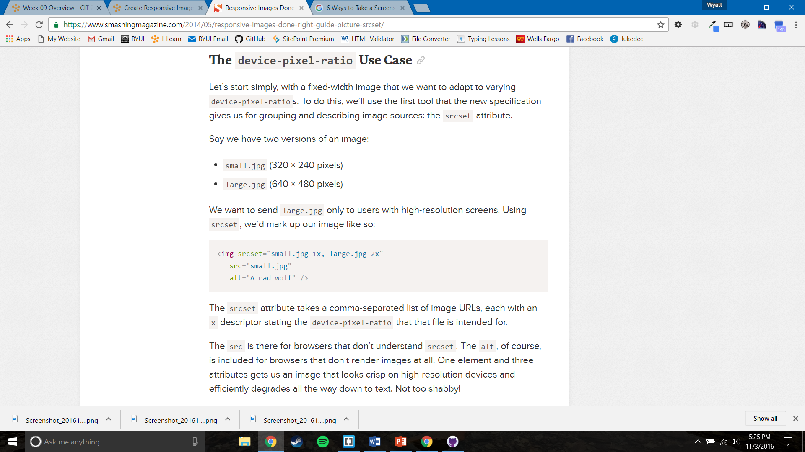

What is Pixel Density?
Pixel Density is measured by pixels per inch or PPI. Pixel density is the amount of pixels present on a screen per square inch. This specification is used on all devices with a screen. People commonly get PPI and DPI commonly mixed up. DPI is dots per inch, and is only used for devices such as printers which are making images with physical dimensions. While they are very similar, they are not the same. Even though different, most people use the two interchangeably.
Pixel Shape and Size
Shape: Horizontal and vertical density are usually the same, as most devices have square pixels, but differ on devices that have non-square pixels.
Size: Pixels are different sizes for the different ppi values a screen has. Pixel size is in direct ratio to ppi. Formula: Size = 1/ppi.
PPI of Popular Devices
- MacBook: 227 PPI
- iPhone 7: 401 PPI
- Nexus 6p: 518 PPI
What PPI do our eyes recognize?
Around 300 PPI. It is debated from a range of 287 – 477 PPI. Beyond this our eyes cannot even appreciate much of pixel density our displays are giving us. This is usually what manufacturers are referring to when they advertise their display as a “retina display.” Meaning the screen is at least equivalent to what our eyes/retinas can perceive. This term seems to be abused though. PPI has become a tech specification that is becoming irrelevant to progress in if we cannot even see the differences. This is especially true for mobile devices with such small screens.
How do images look on different PPI screens?
Your computer sees an image that is 100 x 100 pixels, and displays the image on your screen. Lets say your computer screen had a PPI of 100. So a 100 pixel image would take up one inch on your screen. It is as simple as that. But lets say you were using a Nexus 6P with a PPI of 518. A 100 x 100 pixel image would be around 1/5th of an inch, way too small to see or read. This is where the scrset attribute and the (x) descriptor comes into play to help achieve correct sized images for all different types of screen resolutions.

Device Pixel Ratio (x) - What to Know
Devices with high PPI also have a unique DPR. DPR scales down how the CSS reacts to a device’s PPI. So back to the Nexus 6P. It has a screen resolution 2560 by 1440 pixels and a DPR of 3.5. It’s physical screen is 3.5 times the size of the CSS pixels or logical pixels. A DPR of 3.5 is very high. We can use this as a way to almost media query what image we load by the device pixel ratio the device has. There is no point loading a huge image to a device that can’t see it, and you don’t want to load a small image on a device with a huge resolution which could cause it to become pixelated.
When deciding what pixel resolution to be including on our website, we need to balance two things: picture quality and page load times. We learned how to make our websites responsive to the viewport size. By choosing which images appear by the DPR of the device. This makes our site much more responsive and customized for each and every individual user. This is just one way to make sure our images are the right size and quality for each device, but not having to plug in an image for every single device that exists. This way we just throw in a couple different variations for different DPR, and voila, responsive images.
Click To Download PowerPoint